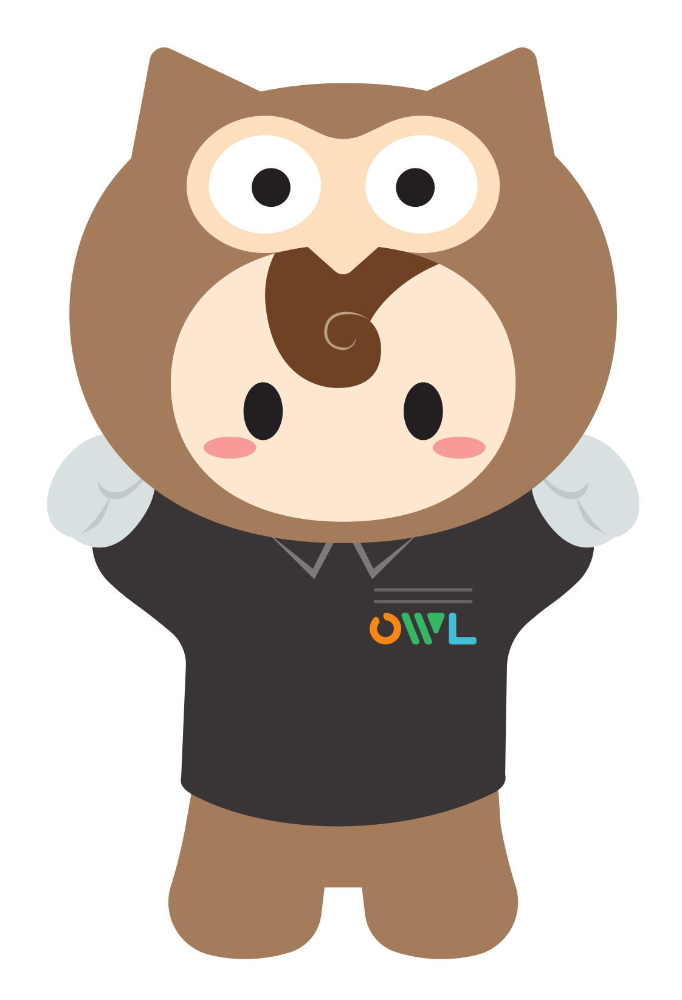
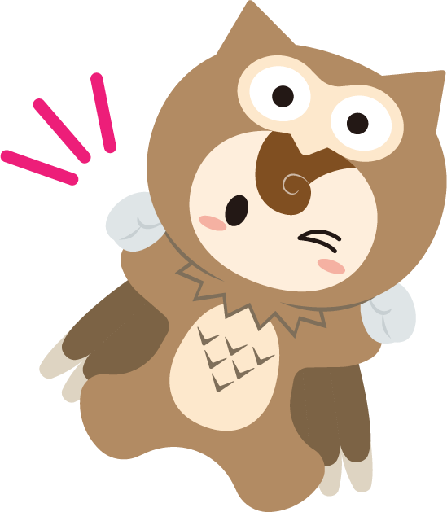
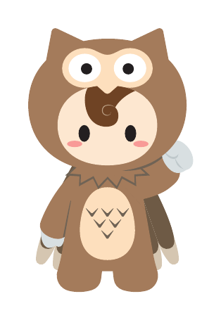
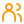
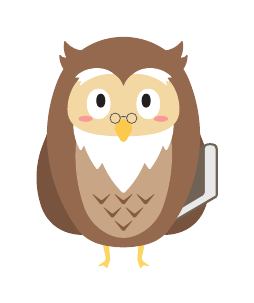
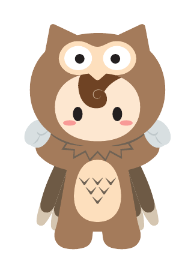
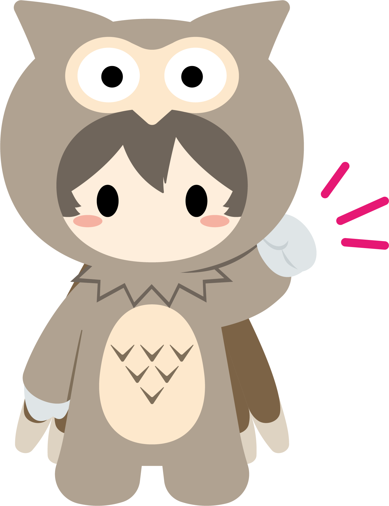

向く人
- 法人の代表・決裁者で、福祉を事業の柱に加えたい方
- 物件（4LDK以上・昭和56年以降）の目処がある方
- 自己資金の目安を用意できる方
- 当事者家族で、サービス管理責任者等の資格をお持ちの方
オーナー様を、開業前から開業後まで、一人にしない。
物件・指定申請・人材・行政同行・開業後の運営まで、担当者が伴走します。

OWL福祉事業
障がい者グループホーム開業サポート

▶ 今すぐ受け取る開業までの流れ・お金・制度の変更（2027年4月〜）を、全46ページにまとめました。
LINEの友だち追加後、すぐにお届けします
物件探し・指定申請の書類・行政や消防への同行・人材の採用まで、担当者が伴走します。
事業計画づくりと、融資の面談への同行まで支援します。加盟金0円・月額固定のみ・ロイヤリティ0円です。
国保連への請求の手続き、入居営業への同行、管理者のマネジメントまで、続けて支えます。
（2棟・8居室・満室で安定した時の例）
| 項目 | 月額 |
|---|---|
| 売上（給付費） | 2,940,194円 |
| 支出（人件費・家賃・光熱費ほか） | −2,337,847円 |
| 営業利益（サポート費の控除前） | 602,347円 |
※ OWL事業ガイドvol.19の数値です。本部サポート費は差し引かれていません。地域・物件・人員配置により変わります。
収益を保証するものではありません。開業直後は入居が少なく、赤字の月もあります。給付費は制度改定で変わります（2027年度改定あり）。
管理者・サービス管理責任者を2棟で共有できる、2棟目から利益が出やすい構造です。


行政・消防同行三重県・Y様
元小学校教員（校長）。経営も資金も未経験から開業。
事業計画の作成と金融機関の面談への同行を受け、計4行を回って、2棟で1,200万円の融資を実行しました。
1人専門家を雇っているような感覚でサポートしてもらえている。
愛知県・S様ご夫妻
紹介業・特別支援学級の教員。
入居が決まらない半年に、担当スーパーバイザーの助言で自分たちから営業に出向き、人づてに信頼が広がりました。
役所なんか全く右も左も分からなかったけれど、ほぼ全部お任せでやっていただきました。
※ご本人への取材にもとづく個別事例です（愛知S様ご夫妻はお顔をアウルくんで伏せています）。融資の可否・金額、入居までの期間は、金融機関の審査・地域・物件により異なります。

2027年4月から、グループホームは自治体ごとの「総量規制」の対象になります（例外あり）。地域ごとの状況を、説明会で確認します。
もっと詳しく → 説明会で管理者は2027年4月から、実務経験3年以上と研修修了が必要です。要件を満たす方の採用・配置を支援します。サービス管理責任者は資格要件があります。
もっと詳しく → 説明会で14STEPS
工程名：mock_v0の仮文言／パンフ4ページとの照合待ち

